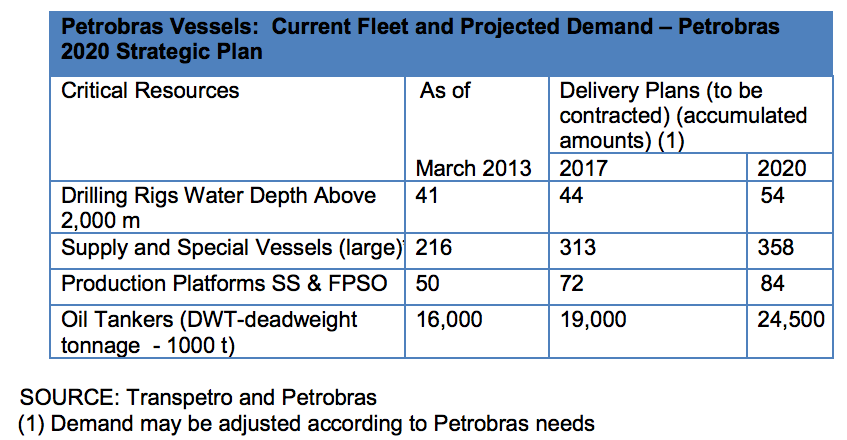

The tables below show Petrobras’ demand for new equipment under their 2014-2018 Business Plan:
Source: Petrobras
Hydraulic fracking technologies might also present good opportunities for U.S. companies, if ANP continues to offer non-conventional areas for leasing. On April 11, 2014, ANP enacted Resolution No. 21/2014, which regulates hydraulic fracturing in unconventional reservoirs. It establishes mandatory adoption of an environmental management system that contains a plan for the control, treatment and disposal of the generated effluents, besides emergency response plans. Additionally, the resolution requires the performance of preliminary studies, which are necessary for the approval of the operations by ANP, such as fracturing simulations and risk analysis. The ANP resolution binds ANP´s approval to the environmental permitting conducted by the relevant state and/or federal environmental agencies. Due to these new ANP
requirements, specific environmental technologies and services should be in high demand and translate into promising prospects for U.S. suppliers.

SOURCE: Transpetro and Petrobras (1) Demand may be adjusted according to Petrobras needs
**According to the Brazilian National Oil Industry Organization (ONIP), the following types of equipment that are part of the above platform supply and special vessels are not currently widely supplied by the Brazilian domestic industry. They can be considered best sales prospects for U.S. suppliers:
Additionally, under the Petrobras Fleet Modernization and Expansion Program (Promef), Petrobras plans to continue to increase its fleet by 2020, as follows:
According to ONIP, the following types of equipment for oil tankers are not currently widely available in the Brazilian domestic industry and should be promising for U.S. suppliers: